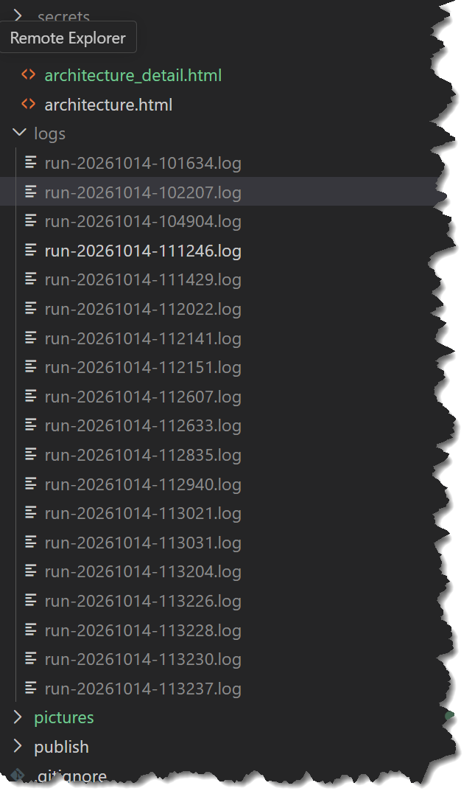
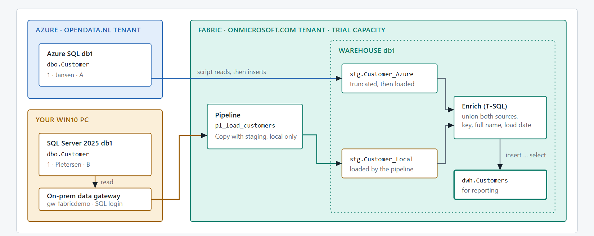
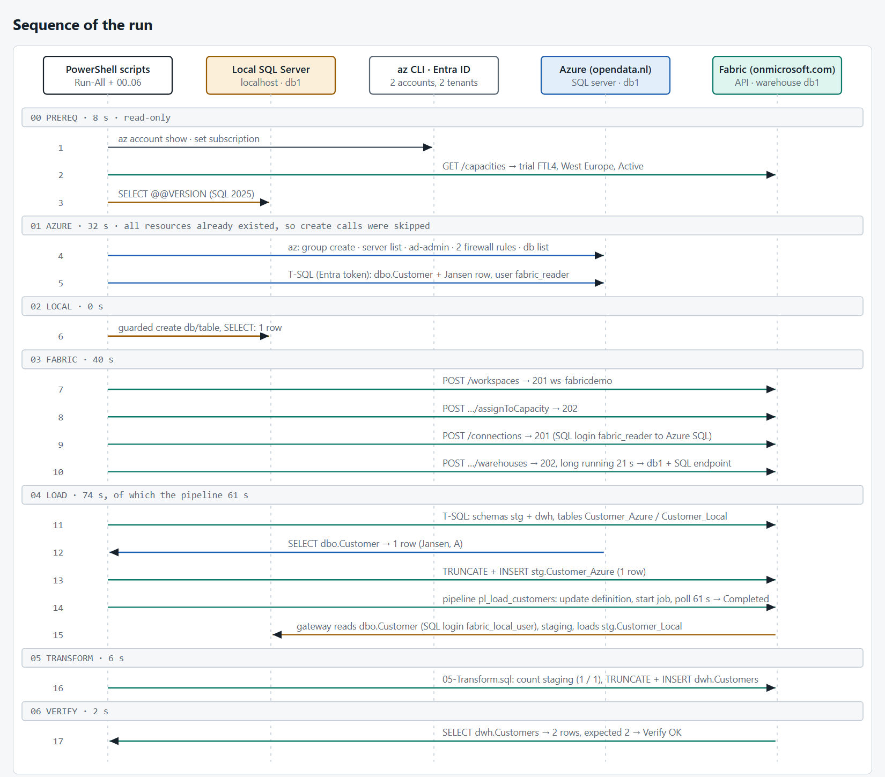

Is automating Microsoft Fabric easy?
Is Fabric easy? I don't know, because I didn't do the exams.
Is automating Fabric easy? Let's find out.


The scenario
A common situation: some data sits in a local, on-premises SQL Server, other data in an Azure SQL Database. You want all of it in one Fabric Data Warehouse.
The obvious answer for the Azure part is mirroring. In my case that is not possible: my Azure subscription and my Fabric tenant are different tenants, and mirroring is not supported between different tenants. So it has to be a plain load.
My test data is tiny on purpose: one customer in Azure SQL (1, Jansen, A) and one in the local SQL Server (1, Pietersen, B). Both even have customer id 1, so the warehouse has to give them a key of its own. The goal is one table, dwh.Customers, with both rows, a full name and a load date.
One script per step
I wanted it repeatable: build everything, look at it, remove everything. Plain PowerShell with the Azure CLI and the Fabric REST API, no extra modules. Every step is idempotent, so you can run it again without making a mess.
| Step | What it does |
|---|---|
00 Prereq | Checks logins, tools, capacity and the local SQL Server (read-only) |
01 Azure | Resource group, SQL server, database, sample row |
02 Local | Local database, table, sample row, read-only login |
03 Fabric | Workspace on the trial capacity, warehouse |
04 Load | Staging tables; Azure row by script, local row by a pipeline |
05 Transform | T-SQL: union, key, full name, load date into dwh.Customers |
06 Verify | Counts the rows |
99 Cleanup | Deletes workspace, connection and resource group |
The Azure row is read by the script and inserted into the warehouse; for one row that is simpler than a pipeline. The local row takes the proper road: a Fabric pipeline, through an on-premises data gateway.
What actually happens, in order
I added a very verbose log to the scripts: every command, every REST call and every SQL statement, with the script and line number that did it. This is the run, drawn from that log.

A few things I only noticed because of the log:
- Two identities are in play: the account for Azure and the account for Fabric. The CLI has to be told which one to use for each token.
- Creating the workspace and the warehouse is quick, but the warehouse is a long-running operation: about 20 seconds of polling.
- Reading the Azure table takes 0.03 seconds. The pipeline for the same amount of data (one row) takes 61 seconds. The data is not the cost; the pipeline, the gateway hop and staging are.
- The whole run, without the pipeline, takes under two minutes.
What went wrong (the honest part)
The local copy did not work the first time. It took five failed pipeline runs, with three different causes:
- The warehouse refuses the source. "DataWarehouse Copy Command doesn't support 'Source connector type' as 'SqlServer'." The warehouse loads with a COPY command, which cannot read a SQL Server directly. Fix: enable staging in the copy activity.
- The gateway cannot become me. "The gateway's service account failed to impersonate the user." Windows authentication through the gateway did not work on this PC. Fix: a small read-only SQL login on the local server.
- A user name that did not match. The connection still held another login name than the one I had created. The error is plain "login failed", so you have to read it twice. Fix: make the two names equal.
One more, earlier: the serverless Azure SQL database had auto-paused. Waking it up takes longer than the default 15-second connection timeout, so the first query failed with a login timeout. A longer timeout and a retry fixed that.
The result
After the fixes, both rows land in the warehouse:
| CustomerKey | SourceSystem | SourceId | LastName | Initials | FullName |
|---|---|---|---|---|---|
| 1 | AzureSQL | 1 | Jansen | A | A. Jansen |
| 2 | LocalSQL | 1 | Pietersen | B | B. Pietersen |
One thing that tripped me up at the end: I looked in the dbo schema and saw nothing. The data lives in stg (raw copies) and dwh (the enriched table). Nothing wrote to dbo.
Cost: a serverless Azure SQL database that pauses itself, plus an existing Fabric trial capacity. A few cents per run, and one cleanup command removes it all.
So, is it easy?
Automating Fabric itself is not hard: the REST API and the Azure CLI do what the portal does, and every item can be created idempotently. The hard parts were everything around it: two tenants, two sets of tokens, a gateway, and the exact error message of a copy command.
Not everything is automated yet. Installing the gateway and creating its connection are still manual steps in the portal; I did not script those. And a pipeline for one row is a lot of machinery. For a real load you would think about staging, scheduling and incremental loads.
Next time: scheduling, and loading more than one row.